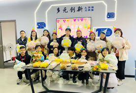
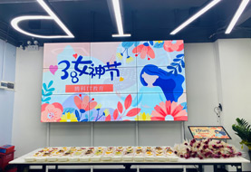
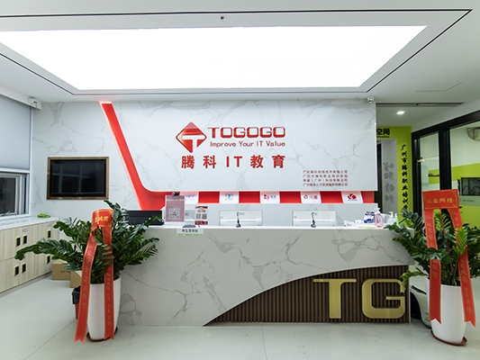

腾科大家庭，是一个愉悦性组织，给大家建立一个轻松快乐的环境工作，定期举行各种活动。
腾科大家庭，是一个学习性组织，腾科会为员工发展做规划，不定期组织员工学习、培训，同时鼓励员工积极学习相关知识和技能。
腾科IT教育集团有多媒体教室，全真机房，仿真实训室，VIP学习室，休息室，办公区域等。腾科设有HCIE-Cloud实验室、HCIE-Storage实 验室、 HCIE-Security实验室、HCIE-RS实验室、CCIE-Collaboration实验室、CCIE-Security实验室、CCIE-SP 实验室、CCIE-RS实验室、 Redhat RHCA实验室、 Oracle OCM实验室、微软服务器实验室、IBM存储实验室、AIX小型机实验室、安全攻防仿真实验室、软件工程实验 室等15个标准实验室，以满足课程研发和各种教学需要。
 返回顶部